MIH1101 · Term Project
MIH1101 Term Project
Interactive web edition of the submitted report
1. Introduction
Phone use late at night is common among university students, and social media is designed to hold attention through features like infinite scroll and autoplay. Qualitative work on bedtime social media use points to social motivations, fear of missing out, habitual checking and a sense of lost control. “Doomscrolling” refers to compulsively scrolling through negative news or feeds. Poor sleep is in turn associated with low mood, poor concentration and daytime sleepiness (Dinis & Bragança, 2018). Poor sleep can be understood as having insufficient sleep but the quality of sleep is important too. Both quality and quantity of sleep is important in ensuring good consistent sleep. Therefore, our research aims to assess whether night-time phone use among university undergraduates relates to later bedtimes and less sleep, and whether poor sleep relates to daytime functioning and mental wellbeing. We focus on mental wellbeing as the primary outcome because it can be measured within a semester, whereas physical health effects emerge over years.
2. Literature review
2.1 Poor sleep and sleep disorders
Students who get poor sleep build up sleep debt. This is not the same as a sleep disorder, but the two can overlap. Poor sleep refers to sleep that is insufficient in quantity (duration of sleep), poor in quality (difficulty in falling asleep) or irregular in timings.
Sleep is organised into cycles of about 90 minutes, alternating between non-REM stages (N1 to N3) and REM sleep (StatPearls, n.d.). Deep sleep is concentrated early in the night and REM sleep later (Kryger et al., 2017; StatPearls, n.d.), so a shortened night, such as waking early after a late bedtime, may cut REM disproportionately. REM sleep appears to play a role in emotional regulation (Altena et al., 2016; Sullivan et al., 2025), which may help explain why sleep loss is associated with low mood.
Social jetlag is having shorter weekday sleep and longer weekend sleep to catch up. It is not a formal disorder, but it is a common student pattern and is associated with depression and metabolic risk. Insomnia is persistent trouble falling or staying asleep, with daytime impact, lasting weeks to months. Delayed sleep-wake phase disorder is when the body clock runs late, so sleep and wake times shift later. Late-night scrolling may also contribute to sleep debt and could worsen existing sleep problems.
2.2 Doomscrolling and sleep
Students are often on their phones scrolling through social media apps like TikTok and Instagram. When students doomscroll at night, displacement happens: scrolling directly replaces sleep time. Reviews find that digital media use, including social media, is associated with shorter sleep and poorer sleep quality in young adults, particularly when it happens at bedtime. Infinite scroll and autoplay make short videos hard to stop, and AI-generated reels may make it harder still for students with lower self-control. The content can also matter, since alarming news or conflict may keep the mind active at night and make it harder to fall asleep. Personalised algorithms keep students engaged and glued to their phones. Evening light from screens can also delay the body clock and melatonin secretion (Chang et al., 2015), making it somewhat harder to sleep at night. However, much of this evidence is correlational and relies on self-report, and few studies separate content type, which is the gap our survey addresses.
2.3 Consequences for students
In the short term, insufficient sleep can lead to daytime sleepiness, poorer concentration and memory, irritability and lower mood. Sleep quality, duration and consistency have been associated with academic performance. Students may also rely more on caffeine to stay awake.
In the medium term, sleep debt can lead to social jetlag, insomnia, higher anxiety and lower mood. This is also the stage where the vicious cycle can start.
In the longer term, as sleep debt accumulates, students face a higher risk of clinical insomnia, depression and anxiety, and possibly lasting habits that carry into working life.
2.4 Existing interventions
Nationally, HPB’s Sleep Challenge awards points for at least seven hours of sleep. In the Healthy 365 application, individuals are able to redeem vouchers from the points they have earned. Furthermore, gamified apps also exist worldwide. Pokémon Sleep uses sleep tracking to let users collect Pokémon. These mainly focus on sleep duration or bedtime, and we found no published evaluations of them.
3.1 Data collection & findings
From our literature review, we hypothesised that significant use of social media, especially right before sleeping, can significantly impact university students’ quality of sleep, which in turn, can poorly impact their mental and physical health.
Thus, to collect primary data, we conducted an online survey that targeted university students in Singapore and obtained a total of 43 responses, with questions ranging from multiple choices to open-ended questions. Their backgrounds are broken down in the figures and table below. Majority are female students and almost half of the respondents stay on campus.
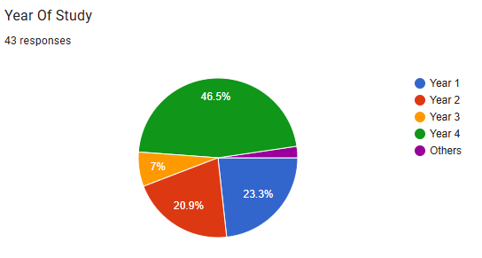
Fig. 1
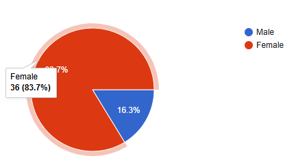
Fig. 2
| Faculty | Count of students |
|---|---|
| College of Design & Engineering | 16 |
| Faculty of Arts & Social Science | 6 |
| School of Business | 2 |
| Faculty of Science | 8 |
| School of Computing | 8 |
| Yong Loo Lin School of Medicine/Health-adjacent | 3 |
Table. 1
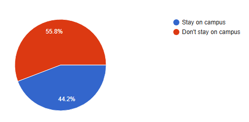
Fig. 3
Afterwards, in order to understand the students’ sleep schedules, we asked them about their general sleep timings, from when they sleep and wake up in the morning. The results are as shown below.
| Time students get into bed | Count |
|---|---|
| 11:30PM | 5 |
| 11:50PM | 1 |
| 12:00AM | 9 |
| 12:30AM | 3 |
| 1:00AM | 9 |
| 1:30AM | 5 |
| 2:00AM | 5 |
| 3:00AM | 4 |
| 3:45AM | 1 |
| 4:00AM | 1 |
Table. 2
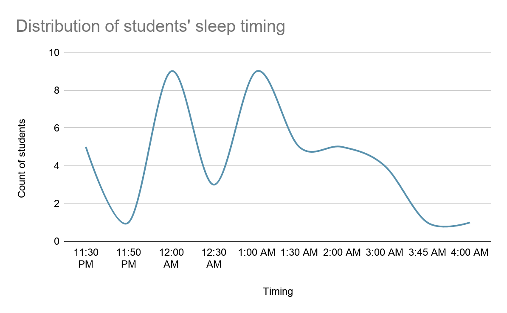
Fig. 4
| Time students wake up | Count |
|---|---|
| 6:30AM | 4 |
| 6:45AM | 1 |
| 6:50AM | 1 |
| 7:00AM | 6 |
| 7:30AM | 4 |
| 8:00AM | 6 |
| 8:30AM | 4 |
| 9:00AM | 9 |
| 9:20AM | 1 |
| 9:30AM | 1 |
| 10:00AM | 2 |
| 10:30AM | 1 |
| 11:00AM | 3 |
Table. 3
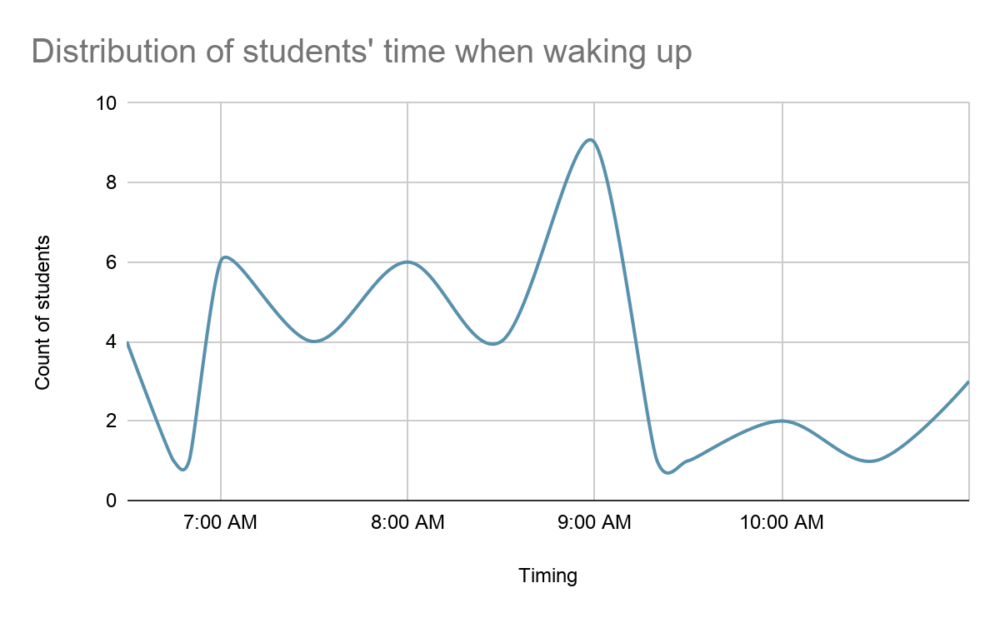
Fig. 5
On top of their sleeping and waking up timings, we also requested students to estimate their range of hours they sleep per night. The figure below shows the reported number of hours that students sleep on average. A significant subset of the population, almost 70%, do not sleep the recommended hours of sleep of 7 - 9 hours for adults aged 18 - 25 years (Lo, 2026).
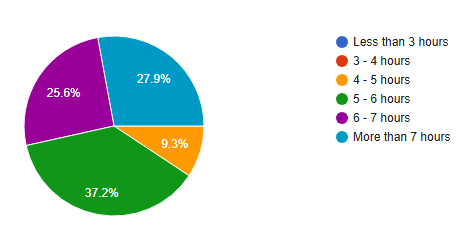
Fig. 6
The table below shows the count of students and their reasons for sleeping later than usual. The most attributed reasons observed were academics, social events/CCAs and doomscrolling. Surprisingly, social events/CCAs also played a major role in affecting students’ sleep, as most have reported staying up late for such events or their meetings. While these commitments may be difficult to eliminate, doomscrolling represents a potentially modifiable behaviour that students have greater control over. Hence, our proposed solution focuses on reducing unnecessary nighttime scrolling, which may help alleviate one contributing factor to insufficient sleep, even among students experiencing the other factors.
| What stops students from getting sleep | Count |
|---|---|
| Studies/Assignments | 15 |
| Binge reading/hobbies/gaming | 6 |
| Doomscrolling | 12 |
| Biological clock/Natural | 2 |
| Procrastination | 5 |
| Social events/other events/CCAs/work | 19 |
| Insomnia/stress (medical condition) | 2 |
| Late night meals/coffee | 2 |
Table. 4
The figure below shows the range of students who are aware of ways to improve sleep quality. Surprisingly, majority of students, almost 90%, are decently aware of such ways. Yet, they may potentially be unmotivated or unsure of how to consistently maintain a sleep schedule. This is further corroborated by their responses as shown in Fig. 8, where majority are open to spending less time scrolling even if it means that it will help them sleep better.
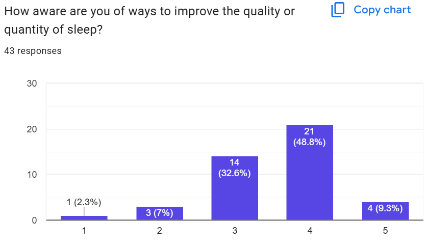
Fig. 7
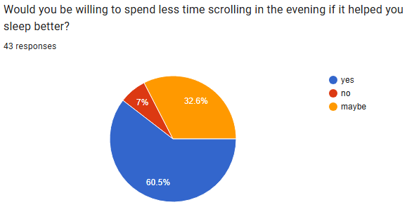
Fig. 8
Additionally, we hypothesize that the type of social media watched by students can significantly impact their sleep. We asked students how often they scrolled through social media before sleeping and what type of content they usually watched, as shown in the figure and table below, with almost 90% of students scrolling through social media more than often before sleeping.
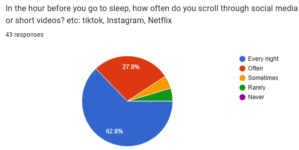
Fig. 9
| What do students watch before going to bed? | Count |
|---|---|
| 3 | |
| 3 | |
| Games | 2 |
| Youtube | 18 |
| Tiktok | 15 |
| Other Entertainment (other than social media) | 10 |
| 14 | |
| Educational videos | 1 |
| Novels | 4 |
Table. 5
As observed, majority of students browse sites such as Youtube, TikTok and Instagram, more specifically those on their ‘For You’ page or short/instant video clips. This can potentially impact their sleep quality which can play into their procrastination to sleep due to their addictive behaviour and further engage their cognitive function that makes them feel ‘more awake’. It has also been observed in another study where short-form video clips had reduced sleep quality among adolescents (Jiang Li et. al, 2024)
Based on this, we further investigated if it affects their ability to sleep as well, as shown in the table below. Majority of the students take at least 20 min or more to fall asleep, and this can greatly affect their recommended hours of sleep.
| How long does it take them to fall asleep | Count |
|---|---|
| 5 min | 1 |
| 10 min | 7 |
| 15 min | 8 |
| 20 min | 1 |
| 30 min | 19 |
| 40 min | 1 |
| 60 min | 5 |
| 120 min | 3 |
| Depends | 1 |
Table. 6
An overwhelming majority also mentioned how their mood is severely affected when waking up in the morning, with most feeling tired and/or exhausted. However, a limitation persists here as there may be other factors that attribute to the students’ state of mind after waking up, with poor quality sleep being one of them. In general, it was observed that most students saw ‘negative moods’ after waking up, which can also imply how lack of sleep can result in poorer mental health (Spytska L, 2024).
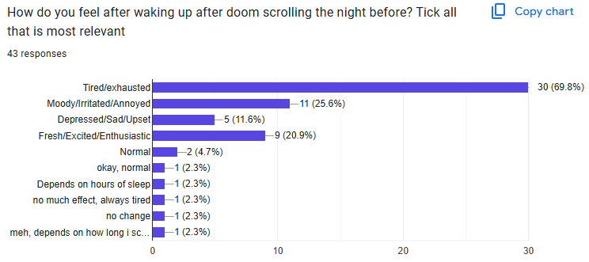
Fig. 10
Lastly, we also asked students on how they think they can manage their sleep and improve its quality. Most of the responses we observed were to directly cut down phone usage before sleep, doing calming and relaxing activities, not using any electronics before bed and having a comfortable night routine to help with sleep. With these ideas in mind, we explored how our solution can better assist students in getting a good quality sleep everyday.
We have acknowledged several limitations in our survey. Firstly, the relatively small sample size (n = 43) and reliance on self-reported responses may limit the generalisability and accuracy of our findings. Additionally, some open-ended questions could have been interpreted differently by respondents, particularly regarding the type of social media content consumed, making it difficult to establish clear relationships with sleep outcomes. For sleep latency, respondents who provided multiple estimates were counted separately, resulting in overlapping frequencies. Lastly, as sleep is influenced by various factors, including academic commitments, social activities and stress, our cross-sectional survey was not able to establish a direct causal relationship between doomscrolling and poor sleep quality. Nevertheless, these findings can provide useful preliminary insights into students' nighttime habits and potential opportunities for behavioural interventions.
3. 2 Analysis of current digital solutions
We also searched up on similar competitors out in the market that focuses on managing sleep health. Their details are shown in the table below.
| Competitor(s) | Description(s) |
|---|---|
| Charlie (Walking Charlie) | A gamified fitness app that encourages physical activity through step tracking, a virtual companion, character customisation, rewards and social interactions with friends |
| Pokemon Sleep | A sleep-tracking game that encourages healthier sleep habits by allowing users to discover and collect Pokémon based on their sleep patterns, while offering rewards and social features |
| SleepTown | A gamified sleep-habit app that encourages consistent bedtime and wake-up routines by allowing users to construct virtual buildings, earn rewards and participate in group challenges with friends |
| Sleepagotchi | A sleep-focused gamification app that rewards users for maintaining consistent sleep schedules through virtual companions, character progression, room customisation and unlockable rewards |
| Samsung Health | A comprehensive health-monitoring platform that tracks sleep duration, stages and physiological metrics through compatible wearables, while offering sleep scores, personalised coaching and sleep-animal profiles. |
Table. 7
We also listed down their overall features and their mechanisms in the table below. We have noted that most of the competitors make use of mobile applications, and in some cases, wearables such as smart watches to monitor their health as well. We aim to incorporate similar crucial features into our solution as well, as they seemed to have worked relatively well.
| Category | Potential Feature | Description / Purpose |
|---|---|---|
| Sleep monitoring | Sleep duration and timing | Tracks total sleep duration, bedtime and wake-up time |
| Sleep consistency / history | Records sleep patterns over time and identifies irregular schedules | |
| Sleep stages | Estimates REM, light and deep sleep | |
| Physiological / recovery metrics | Monitors parameters such as heart rate, respiratory rate, temperature, etc | |
| Gamification | Virtual pet / avatar | Uses an interactive character to encourage engagement |
| Character customisation | Allows users to personalise their character or environment | |
| Points / rewards | Rewards users for completing tasks or achieving goals | |
| Progression / unlockables | Unlocks items, characters or achievements through continued participation | |
| Social interaction | Friends / social interaction | Allows users to connect or interact with friends |
| Group challenges / competition | Encourages participation through shared goals or friendly competition | |
| Behavioural support | Bedtime reminders / coaching | Encourages users to maintain healthier bedtime routines |
| Pre-bedtime phone-use reduction | Encourages users to reduce phone use before sleeping | |
| Social-media and sleep correlation | Tracks or records nighttime social-media habits alongside sleep outcomes |
Table. 8
In the tables below, we compared the features across the various competitors to observe the presence or absence of any key features. We hope to take advantage of the gaps present and address the key features in our solution.
| Competitor | Virtual pet / character | Character customisation | Points / rewards | Progression / unlockables | Friends / social interaction | Group challenges / competition |
|---|---|---|---|---|---|---|
| Charlie | ✓ | ✓ | ✓ | ✓ | ✓ | ✓ |
| Pokémon Sleep | ✓ | — | ✓ | ✓ | ✓ | — |
| SleepTown | — | ✓ | ✓ | ✓ | ✓ | ✓ |
| Sleepagotchi | ✓ | ✓ | ✓ | ✓ | ✓ | — |
| Samsung Health | ✓* | — | — | — | — | — |
*Samsung Health uses sleep-animal profiles rather than interactive virtual pets.
Table. 9.1
| Competitor | Sleep duration / timing | Sleep stages | Physiological / recovery metrics | Sleep history / consistency | Bedtime reminders / coaching | Pre-bed phone-use reduction | Links social-media habits to sleep |
|---|---|---|---|---|---|---|---|
| Charlie | N/A | N/A | N/A | N/A | N/A | — | — |
| Pokémon Sleep | ✓ | ✓* | — | ✓ | ✓ | — | — |
| SleepTown | ✓ | — | — | ✓ | ✓ | ✓ | — |
| Sleepagotchi | ✓ | — | — | ✓ | ✓ | — | — |
| Samsung Health | ✓ | ✓ | ✓ | ✓ | ✓ | ✓** | — |
*Pokémon Sleep estimates sleep patterns using categories such as Dozing, Snoozing and Slumbering, rather than clinical REM/deep/light sleep staging.
**Samsung Health offers coaching that may encourage reducing evening screen use, rather than directly restricting social-media applications.
Table 9.2
6.1 Overview and Value Proposition
Proposed solution: Dozy Town
Dozy Town is primarily designed for university students who tend to delay their bedtime through late-night social media use, scrolling, or other stimulating digital activities. Its main objective is to encourage healthier sleep routines and reduce bedtime procrastination by making sleep more engaging, rewarding, and meaningful.
By transforming late‑night screen time into a playful and rewarding experience, Dozy Town directly addresses the issue of doomscrolling and helps students reclaim healthy sleep habits. The concept is inspired by an existing app, Charlie – Walking Charlie. In this platform, users are given a small character, Charlie, and must walk to gain points and upgrade him by purchasing cute items. However, if they do not walk enough, Charlie loses his abs and can even become overweight. While simple in design, it provides a clear visual representation of insufficient physical activity and encourages users to walk more. This led us to ask: does an application that combines fun and sleep already exist?
After conducting research and testing applications such as Sleepagotchi, we realised that while several apps can track sleep or provide sleep scores, few actively encourage the behaviours that lead to healthier sleep habits. Most focus on the outcome of sleep rather than the routines and decisions that occur before bedtime. This is particularly relevant for university students, whose sleep is often disrupted by bedtime procrastination and doomscrolling. As a result, we wanted to design an application that not only monitors sleep, but also encourages healthier evening habits through engagement, education, and positive reinforcement.
In Dozy Town, each user is accompanied by a small owl avatar that reflects their sleeping habits. The application is connected to the user’s smart watches so as to have access to its sleep analytic.
After a restorative night, the owl appears cheerful and energetic, symbolising the benefits of healthy sleep.
However, following insufficient rest, the owl looks visibly tired, with dark circles under its eyes. Through short speech bubbles, it expresses cravings for unhealthy food, an evidence‑based consequence of sleep deprivation, while also offering gentle recommendations on how sleep quality could be improved.
Students would thus have easy visuals to help them understand what lack of sleep looks like and some of its consequences. Beyond acting as a visual representation of sleep quality, the owl also helps users identify patterns in their habits. Over time, it can highlight associations between evening behaviours and sleep outcomes, such as later bedtimes after extended social media use or improved sleep following calming pre‑sleep activities. This personalised feedback encourages students to reflect on their own routines and make informed adjustments to their habits.
Unlike applications that primarily focus on tracking sleep outcomes, Dozy Town aims to make the behaviours leading up to sleep an integral part of the user experience. Its distinctive feature is the combination of a virtual companion, a town-building game, and short activities designed to encourage healthier evening routines. Rather than treating sleep as an interruption to students' productive lives, the application reframes it as an opportunity for gradual progress.
6.2 Core Design Principles with Evidence
However, visuals alone are not enough. Sleeping itself is a passive action. Except for a few dreams, we do not have the feeling of having done anything in particular. In certain cases, it even appears as a waste of time. We thus had to find a way of making sleep fun again.
This led us to establish several design principles to ensure that Dozy Town encourages healthier sleep habits. The application therefore prioritises consistency, positive reinforcement, accessibility, and responsible data use.
1. Reward consistency and wind-down habits rather than sleep scores
Dozy Town does not only focus on sleep duration unlike certain applications. Instead, it rewards users for developing regular sleep schedules and completing healthy evening routines. This distinction is important because sleep measurements alone are often insufficient to help users develop a healthy sleep.
This is why each sleep is analysed by the application. It takes into account three main aspects of sleep:
Consistency: whether during the week or the weekend, users are encouraged to go to bed and wake up at approximately the same time. This design addresses a common student pattern, where responsibilities during the week require early bedtimes, while weekends often lead to late nights spent doomscrolling or watching movies. Such irregular schedules create a misalignment in sleep rhythms, which is known to negatively impact sleep quality. By valuing consistency rather than duration alone, the application helps users stabilize their circadian rhythm and reduce the effects of this “social jetlag.”
Length of sleep: For young adults aged 18 to 25, the recommended duration is between seven and nine hours per night. Sleeping significantly less or more than this range is associated with negative health outcomes, including impaired cognitive performance and metabolic disturbances. By accessing the user’s age, the application can provide tailored feedback and encourage adherence to this optimal sleep window and does not simply advise: “sleep more”.
Quality of sleep: While sleeping, our brain passes through 4 different stages: entering sleep, light sleep, deep sleep, REM sleep. This forms a cycle of around 90min which is repeated several times during the night. Each of those phases have their own benefits. Sleep quality depends on completing that cycle several times. Insufficient deep and consolidated sleep across the different stages, particularly deep sleep and REM, often results in daytime sleepiness. This occurs because the brain and body are unable to complete the restorative processes on which they depend. Having their sleep analysed might help some students understand why, despite going to bed early or knowing they slept through the night, they still feel exhausted in the morning and ca thus take actions to solve the issue.
2. Encourage disengagement from screens before bedtime
Because Dozy Town aims to address bedtime procrastination associated with late-night digital use, the application must avoid becoming another reason to remain on the phone. Evening interactions should therefore be short and purposeful, encouraging users to complete their wind-down activities and put their devices aside. This principle addresses a potential contradiction in the concept: an application intended to reduce late-night screen use should not require prolonged screen interaction. The interface itself is designed to not stimulate the brain activity too much, with, for example, the use of calming and relaxing music.
3. Prioritise accessibility and privacy
The application should remain useful for students who do not own a smartwatch. Manual check-ins and optional phone-based features provide alternative ways to participate, even if less recommended as result can be less accurate. In addition, the application should minimize the collection of personal data. It only focuses on what is necessary for its the functionment.
4. Provide feedback without making clinical claims
Dozy Town aims to help students reflect on their routines rather than diagnose sleep disorders or mental health conditions. While it gives personal insight based on the data it collected, such as going to bed early, it does not in any way replace a professional.
6.3.1 Daily Loop: Wind-Down Quest and Morning Check-In
Dozy Town follows a daily cycle consisting of an evening wind-down quest, bedtime, overnight town development, and a short morning check-in. This cycle connects healthy evening habits with a visible sense of progression while keeping screen interaction to a minimum.
Evening: Wind-Down Quest
Before the user's intended bedtime, the application offers a short checklist of activities designed to facilitate the transition from screen use to sleep. These may include dimming the lights, reading a book or any other calming activity, and completing a final-scroll check. Once the quest is completed, users are encouraged to put their phone aside for the rest of the evening. Those quests should help the user develop good habits that improve their overall sleep.
6.3.2 Sleep Detective: Personalised Pattern Recognition and Reward
After the sleep analysis, Dozy Town attributes a score that integrates consistency, duration, and quality, as each variant is important. A positive result grants the user several advantages:
In‑app currency: It can be used to personalise the owl, expand buildings, and grow the town. As in many video games, upgrading one’s avatar or environment creates a sense of progression and quest, which motivates users to participate not only for health benefits but also for the enjoyment of the game itself. More importantly, the growing town provides a visible representation of something being achieved while sleeping. Sleep is often perceived as passive or unproductive, particularly among students who may feel tempted to stay awake studying, socialising, or scrolling through social media. By allowing the town to expand overnight, Dozy Town reframes sleep as a meaningful activity that actively contributes to progress within the game, helping users associate sleep with accomplishment rather than lost time.
Faster task completion: Students often underestimate the importance of good sleep. They do not realise that being sleepy slows them down. To make them understand that when tired they are not functioning at their full capacity, Dozy Town relies on visuals again. In many video games, when users spend points to expand their map or acquire new items, they must wait for a certain period of time while the building is constructed or the clothing is crafted. Dozy Town adopts a similar mechanic, but directly links the waiting time to sleep quality. If the user has slept well, the owl is energetic and can complete tasks more quickly, for example, sewing a new outfit in fifteen minutes. In contrast, when the user is fatigued, the owl becomes sluggish and the same task may take 2 hours. This design makes the connection explicit: good sleep enhances productivity, while poor sleep slows progress and can help some grasp the importance of healthy sleep.
Incentive: The application is specifically designed for university students, making institutional involvement both relevant and beneficial. Users could receive vouchers redeemable at the university stores, thereby encouraging engagement while supporting campus services. Such partnerships would not only provide tangible rewards for users but also align with the university’s mission to foster healthier lifestyles and improve student productivity. Moreover, collaborations with external brands that promote student health and well‑being could be explored in the future.
Rather than simply receiving a score for their sleep, users get to see its consequences. These advantages collectively help motivate students to improve their sleep habits. The game elements embedded in the application add a playful dimension to sleeping, transforming what is often perceived as wasted time into an engaging activity. The extended duration of tasks when the owl is fatigued provides a clear visual representation of the consequences of poor sleep, an aspect too often overlooked, while still keeping the application fun. Finally, the voucher system reconnects sleep with the real world, offering tangible rewards that give material value to healthy rest. In this way, sleeping can even be perceived as an activity that “earns” benefits, reinforcing the practical importance of good sleep habits. Furthermore, by linking progress to regular sleep habits rather than a single “perfect” night, the application encourages long‑term behavioural change. Students are rewarded not only for sleeping, but also for developing healthier evening routines and greater consistency in their daily schedules. Over time, these habits may help reduce bedtime procrastination and make healthy sleep feel more achievable and sustainable.
6.3.3 Wearable Integration and Accessibility
The application is connected to the user’s smart watches so as to have access to its sleep analytic.
To make Dozy Town accessible to a wider range of university students, wearable integration is recommended rather than mandatory. The application offers three participation levels:
No wearable: Users manually record their bedtime and wake-up time and complete daily check-ins.
Phone only: With the user's permission, the application may use available phone-based signals, including screen activity, to help estimate evening digital habits and sleep timing.
Compatible wearable: Users can connect supported devices, such as Apple Watch, Fitbit, or Garmin, through available health-data integrations to obtain additional information about sleep timing and regularity.
This helps include students who might not have access to smart devices but also those who might not feel comfortable sharing that much data with an application.
6.3.4 Dream Library: Education and Awareness
The Dream Library provides short educational cards that help students better understand sleep and the factors that influence it. Each card takes approximately 60 seconds to read and covers topics such as circadian rhythms, evening light exposure, caffeine timing, bedtime procrastination, sleep and anxiety, and when to seek professional help.
After reading a card, users can complete a short quiz to earn in-app currency and unlock library-related decorations or buildings in their town or for their owl. This, again, combines health education with gamification, making scientific information more accessible and engaging for university students.
The Dream Library complements the application's habit-building features by helping users understand why certain behaviours may support healthier sleep routines. It also helps them get access to information they might never have, as after a day of class, few students would have normally taken the time to read a scientific article on the subject.
6.3.5 Garden: Mood Tracking and Well-Being Support
The Garden introduces an optional mental well-being component to Dozy Town. Users can record their mood through a simple daily check-in. As they engage with the feature, their garden gradually develops. This provides a gentle way to reflect on well-being without turning the application into a clinical monitoring tool.
If users repeatedly report poor sleep or low mood over an extended period, the owl may display positive messages to encourage users to continue while also proposing supportive information cards. These cards can offer general sleep-habit guidance, a short guided exercise to destress before going to bed, and information about appropriate counselling or professional support services found on campus.
Any guidance inspired by cognitive behavioural therapy for insomnia (CBT-I) must remain appropriately framed, as Dozy Town is not a substitute for professional assessment and encourages students to consult a professional should the situation continue. The mood-tracking feature is optional, and users are never penalised for not reporting, or reporting negative emotions.
6.3.6 Social Features: Buddy Pledges and Town Visits
The final aspect of our application relates to social factors. Friends often influence students’ habits, whether in terms of diet, activities, or sleep schedules. Peer relationships can therefore serve as a source of motivation for healthier sleep. Going to bed early may sometimes be perceived as boring or even as a sign of laziness, particularly among university students who do not want to miss out on social activities. By encouraging friends to commit to healthier sleep habits together, Dozy Town aims to change this perception. Instead of feeling that they are missing out or acting differently from their peers, students can feel that they belong to a group that shares the same goal and supports one another in achieving it. Within the application, friends are able to visit each other's towns, exchange encouraging messages, and participate in small collaborative challenges. For example, two friends may commit to maintaining a consistent wind-down routine over the course of a week in order to unlock a shared building or decorative item in their towns. Such features encourage accountability and mutual support while promoting healthier sleep habits. In addition, optional badges and friendly challenges can provide an extra source of motivation without creating excessive pressure or unhealthy competition around sleep.
These social interactions are designed to emphasise collaboration rather than comparison. Dozy Town does not put the loser down, but rather encourages better habits. The Buddy Pledge is used as a motivation tool only and is optional. It allows friends to work towards a shared goal, while town visits provide a low-pressure way of maintaining social engagement. By making healthy sleep a shared group objective rather than an individual restriction, Dozy Town aims to make going to bed earlier feel socially accepted and supported rather than isolating.
6.3.7 Privacy and Responsible Data Use
Because Dozy Town handles information about sleep, mood, and digital habits, privacy is an important part of its design. Personal data should remain on the user's device by default wherever technically feasible, and any optional sharing of information for research purposes should require informed consent.
The application collects only the information necessary to support its features. For example, it uses broad categories of digital activity, such as short videos, news, messaging, studying, or other activities, rather than storing individual content titles or private messages. Connections to wearable devices and phone activity are optional and require appropriate permissions.
Friends can visit each other's towns and participate in challenges without automatically accessing detailed sleep records or mood information. These safeguards aim to ensure that social engagement does not come at the expense of users' privacy.
6.4 Prototyping
Clickable prototype
Explore the proposed Dozy Town experience inside the report. Choose a feature to preview the interaction.
To illustrate the proposed solution, a conceptual prototype of Dozy Town was developed to demonstrate its main features and user interactions. The prototype consists of five key screens that represent the user's journey through the application, from preparing for sleep to reviewing personal progress.
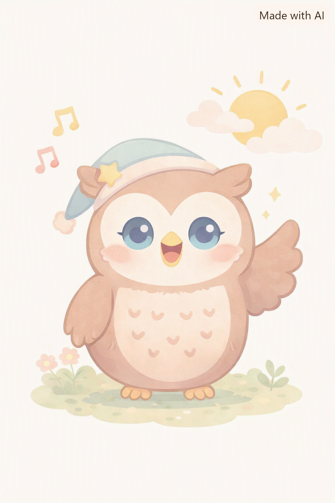
Fig 1, generated with Copilot, rested owl. This would be a possible representation for the owl if the user had a healthy sleep. He would open the application in the morning to find the owl rested, ready to start the day.
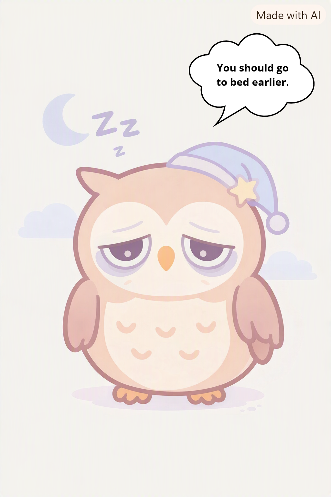
Fig 2, generated using Copilot, sleepy owl. In opposition, should the user have a bad night and not enough sleep, the owl would look tired with black circle. It looks ready to fall from exhaustion and offer little advice in the form of speech bubbles or express unhealthy craving. While exaggerating the features, both owl designs are here to help users visualize the physical effect Fig 3, generated using copilot, Dozy Town. Here is a possible design for the town users can build. With enough in app currency, they can buy accessories for their owl or new buildings. Since the owl had a healthy sleep, it wanders the town, looking full of energy. Again, to insist on visualizing the effect of a good night of rest, the task completion for unlocking a new item is short, here, only 15 min.
![Fig 2, generated using Copilot, sleepy owl. In opposition, should the user have a bad night and not enough sleep, the owl would look tired with black circle. It looks ready to fall from exhaustion and offer little advice in the form of speech bubbles or express unhealthy craving. While exaggerating the features, both owl designs are here to help users visualize the physical effect Fig 3, generated using copilot, Dozy Town. Here is a possible design for the town users can build. With enough in app currency, they can buy accessories for their owl or new buildings. Since the owl had a healthy sleep, it wanders the town, looking full of energy. Again, to insist on visualizing the effect of a good night of rest, the task completion for unlocking a new item is short, here, only 15 min.](assets/image16.png)
Fig 4, generated using Copilot, Dozy Town after unhealthy sleep. In the same town, however, the user slept poorly. It is shown with the owl sitting on a bench instead of wandering around the town. It looks less energetic, more tired, and in the form of a speech bubble, again, complaining about lack of sleep and offering suggestions to sleep better next time. Being tired, it can not work as usual. Here, the same task takes him 2 hours instead of 15 min, illustrating that lack of sleep means less effectiveness.
![Fig 4, generated using Copilot, Dozy Town after unhealthy sleep. In the same town, however, the user slept poorly. It is shown with the owl sitting on a bench instead of wandering around the town. It looks less energetic, more tired, and in the form of a speech bubble, again, complaining about lack of sleep and offering suggestions to sleep better next time. Being tired, it can not work as usual. Here, the same task takes him 2 hours instead of 15 min, illustrating that lack of sleep means less effectiveness.](assets/image15.png)
Fig 5, generated using Chatgpt, wind-down quests. In the evening, students can complete easy quests to help them sleep better and build healthy habits, such as reading a book, avoid caffeinated beverages and opt for herbal tea instead.
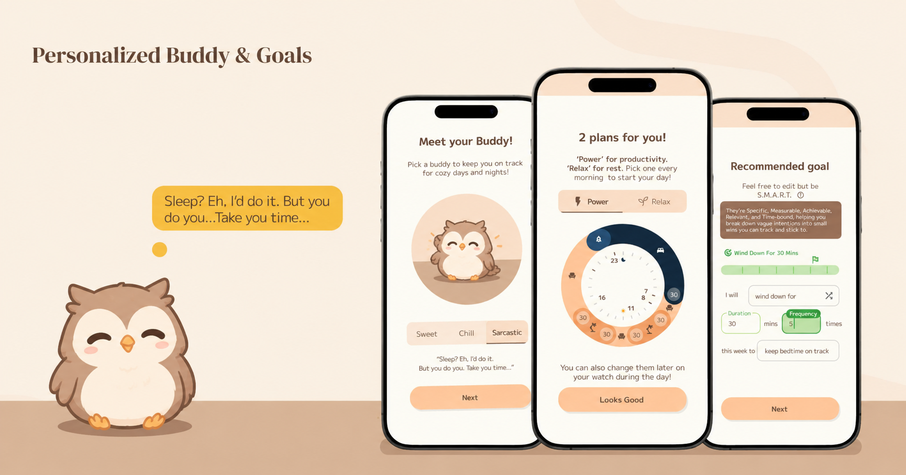
6.5 Interdisciplinary integration
Dozy Town draws on several disciplines, and each feature combines at least two of them. Table 10 shows what each discipline contributes and how they fit together.
Table 10: Disciplines behind each feature
| Feature | Disciplines | How they combine in the design |
|---|---|---|
| Core owl and town reward mechanic (6.1, 6.2) | Behavioural economics, psychology, design | Visible progress and rewards for steady effort (behavioural economics). The town growing overnight reframes sleep as productive time and supports autonomy and competence (psychology). A friendly owl and town make progress easy to see (design). |
| 6.3.1 Daily loop (evening wind-down quest, bedtime, morning town growth, 30-second morning check-in) | Behavioural economics, psychology, design, data and AI | The quest adds a planned step between scrolling and sleep (behavioural economics, psychology). The 30-second check-in keeps effort low (design) and records how rested the user feels and the category of what they did before bed, which feeds the insights (data and AI). |
| 6.3.2 Sleep Detective | Data and AI, psychology, medicine | Data and AI find patterns between evening activity and sleep. Psychology uses self-awareness to prompt change. Medicine keeps the wording cautious, showing association and not cause. |
| 6.3.3 Wearable tiers (none, phone only, wearable) | Medicine, data and AI, design | Medicine defines which measures matter (timing, duration, regularity) and warns that stage estimates are less reliable, so they carry less weight in the score. Data and AI handle the three data sources. Inclusive design means students without a watch can still take part. |
| 6.3.4 Dream Library (60-second cards) | Education, medicine, psychology, design | Experts check content (medicine). Short, spaced lessons suit busy students (education). Quizzes and rewards keep attention (psychology, design). |
| 6.3.5 Garden (mood taps, support card, CBT-I style tips, university counselling and regional crisis resources) | Psychology, medicine, design | Mood taps make tracking feel light (design). CBT-I style tips, such as a steady wake time, draw on clinical psychology. Medicine sets when to point users to professional help. The support card shows services for the user’s own university and region (design). |
| 6.3.6 Social features (buddy pledge, town visits) | Psychology, behavioural economics, design | Peer support builds relatedness (psychology). A shared pledge uses commitment with a friend (behavioural economics). Cooperative design avoids competing over sleep. |
| 6.3.7 Privacy (on device, categories only) | Data and AI, ethics and policy | Data design stores only broad categories on the device. Ethics and policy treat bedtimes, activity habits and mood as sensitive data, and follow the data protection rules of each country where the app is used. |
6.6 Traceability table
Table 11 links each feature to the survey (Section 3.1) and the competitor analysis (Section 3.2). The last column states how strong the evidence is. Our survey is small (n = 43), self-reported and cross-sectional, and the sample is 83.7% female and 46.5% Year 4. Its faculty breakdown (Table 1) suggests respondents came from one Singapore university, so the findings show a need among university students but cannot prove it holds across all universities, and cannot prove that scrolling causes poor sleep.
Table 11: From findings to features
| Feature | What our findings show | How the feature responds | Strength of evidence |
|---|---|---|---|
| Sleep Detective | 62.8% scrolled every night and 27.9% often in the hour before bed (Fig 9), so 90.7% scrolled every night or often. YouTube (18), TikTok (15) and Instagram (14) were the most common, mostly short-form feeds (Table 5). After a doomscrolling night, 69.8% felt tired or exhausted, 25.6% moody and 11.6% sad, though 20.9% felt fresh (Fig 10). No competitor links social media habits to sleep (Table 9.2). | Shows each user the link between their own evening activity and their sleep, with careful wording. | Strong for the gap and prevalence in our sample. The effect on sleep is not tested, because we did not compare scrolling and non-scrolling nights. |
| Daily loop | Doomscrolling was cited by 12 students (Table 4). Unlike social events (19) or studies (15), it is a habit students can change. 60.5% would scroll less if it helped them sleep, and 32.6% said maybe (Fig 8). Students suggested cutting phone use, calming activities and a night routine (Section 3.1). Only SleepTown and Samsung Health offer pre-bed phone reduction, and Samsung only indirectly (Table 9.2). | A wind-down quest replaces the last scroll with a calming routine, and the morning check-in records what the user did before bed. | Moderate. Willingness is stated, not tested as behaviour. |
| Wearable tiers | Only 6 of 43 got into bed before midnight, and 25 (58%) at 1:00AM or later (Table 2, calculated). Wake times ran from 6:30AM to 11:00AM, with 17 at 9:00AM or later (Table 3, calculated). Up to 72.1% reported sleeping under 7 hours (Fig 6; the 6 to 7 hour band may include exactly 7). Only Pokémon Sleep and Samsung Health estimate sleep stages (Table 9.2), and Samsung needs compatible wearables (Table 7). | Tracks timing and duration through three tiers, so a watch is optional, and treats stage estimates as lower-weight information. | Moderate. Self-reported, and the spread is across students, not within each student’s week. Wearable ownership was not surveyed. |
| Core owl and town reward mechanic | 90.7% rated their awareness of ways to improve sleep at 3 or higher out of 5, yet up to 72.1% slept under 7 hours (Figs 6 and 7), so knowing is not enough. Sleep competes with social events (19), studies (15) and doomscrolling (12) (Table 4). Competitors already reward and progress users (Table 9.1). | Gives sleep its own visible reward, with the town growing overnight and rewards for healthy sleep and routine. | Limited to moderate. A design inference. This matches competitors and is not a gap. Effect untested. |
| Dream Library | Awareness is moderate and not high: only 58.1% rated 4 or 5, while 41.9% rated 3 or lower (Fig 7). Students themselves suggested practical habits (Section 3.1). | 60-second cards on scrolling, body clock and sleep habits. | Moderate. Awareness is self-rated, and we did not ask which topics students want. |
| Garden | After a doomscrolling night, 25.6% felt moody or irritated and 11.6% sad or upset (Fig 10). Mood features were not part of our competitor comparison (Tables 8 to 9.2). | Mood taps, CBT-I style tips, a support card and the user’s own university counselling and regional crisis resources. | Limited to moderate. Self-reported morning mood only, with no anxiety or depression screener. It acts as a safety net, not a treatment. The competitor gap is not shown in Section 3.2. |
| Social features | Social events, CCAs and work were the largest reason for staying up (19, Table 4), so late-night commitments are the top barrier. Whether peers influence this is an inference. Group challenges are absent in Pokémon Sleep, Sleepagotchi and Samsung Health, but present in Charlie and SleepTown (Table 9.1). | Buddy pledge and town visits use peers for support, not competition. | Limited. We did not ask about peer influence on scrolling. The gap is partial. |
| Privacy | Not measured in our survey. The app handles bedtimes, activity habits and mood, and wearables collect physiological data (Table 9.2). | Stores data on the device and keeps only broad activity categories. | Not tested. Justified by data sensitivity, not by survey results. |
The strongest case is the Sleep Detective, supported by high pre-bed scrolling and a clear competitor gap, then the daily loop and wearable tiers. The reward mechanic, Garden, social features and privacy rest on design reasoning and are untested, which is why Section 7.4 proposes evaluating them. Applying the app to all university students is a design intent, and the pilot across more than one university (Table 13) is how it would be tested.
7. Stakeholders and Implementation
7.1 Stakeholder map
Dozy Town is a proposed concept for university students in general. Table 12 outlines the potential stakeholders, their motivations for supporting the initiative, and the mutual benefits they could gain, both in the short and long term.
Table 12: Stakeholders, motivation and mutual benefit
| Stakeholder | Role | Why they might want to help (benefit to them) | What Dozy Town gains, including long term |
|---|---|---|---|
| University students (target group) | Users and co-designers | An enjoyable, student-made alternative to conventional sleep trackers. In our survey, up to 72% reported sleeping under 7 hours, 90.7% scrolled every night or often before bed, and 60.5% said they would spend less time scrolling if it helped them sleep better (Figs 6, 8 and 9). | Feedback on the owl design, town mechanics and ease of use, and a user base that keeps the app relevant as needs change. |
| University counselling and health promotion services | Safety and referral advisers | A low-threshold way to reach students whose distress shows up as poor sleep. After a doomscrolling night, 25.6% of respondents felt moody or irritated and 11.6% sad or upset (Fig 10). | Safe referral wording and credibility. Long term, a link into each university’s existing wellbeing services. |
| Halls, residential colleges and student housing | Pilot setting and community | Resident wellbeing, and a ready-made activity for building community. Social events, CCAs and work were the most common reason for staying up late (19 respondents, Table 4). | A test community, residence points as rewards, and shared challenges within a hall. Long term, a model other residences could adopt. |
| Faculty and course teams | Advisers on academic pressure | Better attention and learning. Studies and assignments were the second most common reason for staying up late (15 respondents, Table 4). | Guidance on deadline timing, and support for a campus culture that values rest. |
| Health promotion bodies (for example HPB in Singapore) | Sponsor, health education, communication | A way to turn preventive sleep messages into sustained digital engagement among young people. Its value depends on showing that users develop healthier behaviours, not just spend more time in the app. | Funding, credible health content and wider reach. Long term, a model for youth sleep health programmes. |
| Clinicians and sleep researchers | Advisers and evaluators | A chance to apply sleep science in a real-world tool, test whether gamification supports healthier sleep, and ensure students receive accurate information. | Clinical review of content, scoring and referral thresholds, and safeguards against guilt and pressure. Long term, research evidence. |
| Campus retailers, partner brands and non-profits | Funding and rewards | Reach to students, a wellbeing-linked image, and a platform for youth digital wellness. | Funding for vouchers and development. Partners are screened for fit with student wellbeing. |
Co-design and feedback. Students from different universities would shape the owl design, town mechanics and overall experience through in-app feedback and a survey every 3 to 4 months. As students ourselves, we lack full expertise, so expert input would guide how sleep data is interpreted and scored.
Funding and data. Sponsor funds would cover development, smartwatch integration, servers and user testing. Personal data stays on the user’s device by default (Section 6.3.7). Only users who give informed consent would contribute data for research, and sponsors would receive only anonymised, aggregated results from those users. Data handling would follow the data protection rules of each country where the app is used (for example the PDPA in Singapore). The app would complement professional services and not replace them.
7.2 Proposed collaboration and incentives
All collaborations and incentives below are proposals. No partnership has been secured.
Universities. Partner universities and their halls could provide campus store vouchers or residence points, host a pilot, and link the app’s support card to their own counselling services. This aligns with a university’s aim of promoting healthier student lifestyles. Because services differ between institutions and countries, the support card would show the user’s own university and regional resources.
Health bodies and external partners. Health promotion bodies such as HPB could review educational content and support youth health messaging, and could consider linking Dozy Town to existing health reward schemes. Non-profits and health-oriented brands could contribute funding or discounts.
Incentives for students. Rewards would follow the same basis as the sleep score in Section 6.3.2: consistency, duration within the recommended range for the user’s age, and estimated quality, with the lowest weight on stage estimates. The range is 7 to 9 hours for ages 18 to 25, and the app would use the range for the user’s age, since university students include older learners. Sleeping beyond the range would earn no extra, so more sleep is never treated as better. Vouchers would be modest and capped, with in-app rewards (town growth and owl customisation) as the main motivation, since large external rewards can weaken intrinsic motivation.
Risks to manage with expert input. Rewarding sleep carries risks: pressure to hit a number can itself disturb sleep, students without a wearable or with health conditions could be disadvantaged, and self-reported data could be exaggerated for rewards. Voucher and support options will also differ between universities, which could make the experience uneven. The design would use weekly progress, allow phone-based or manual use, let users switch off owl effects, keep rewards small, and keep in-app rewards identical for every user.
7.3 Rollout roadmap
The roadmap below is proposed future work. Phase 1 is partly complete through this project.
Table 13: Proposed rollout
| Phase | Scope | Key activities |
|---|---|---|
| 1. Research and co-design (partly done) | Student needs | Our survey and competitor review (Sections 3.1 and 3.2) are complete. Next steps are focus groups with students from several universities and expert consultation on recommendations and scoring. |
| 2. Pilot | A small group of student volunteers from more than one university | Build and test the prototype, including links to wearables, and check that students can understand reports without feeling overwhelmed. Collect baseline and follow-up data. |
| 3. One hall | One residential hall at a pilot university | Add residence points, shared challenges and counselling referral, and gather feedback from residents and hall staff. |
| 4. One university campus-wide | All undergraduates at the pilot university | Voucher partnerships, faculty guidance on deadlines, and wider counselling integration. |
| 5. Other universities and wider youth | Other universities, then younger users | Partnership with health promotion bodies such as HPB, with referral resources localised per institution and content and safeguards adapted for age. |
Each phase would proceed only if the previous one showed benefit without harm.
7.4 Evaluation plan
The evaluation would test whether Dozy Town improves evening habits, sleep and wellbeing across different universities, and whether it does so safely. It would also test the features that are currently untested (Table 11).
Table 14: Proposed outcomes and measures
| Outcome | Measure | Success indicator |
|---|---|---|
| Bedtime scrolling | Self-reported scrolling before bed, and a bedtime procrastination scale (new at baseline, not in our survey) | Reduction from baseline |
| Sleep regularity | Variation in bedtime and wake time across the week | Less variation than baseline |
| Sleep amount | Share of nights within the recommended range for the user’s age | Increase from baseline |
| Time to fall asleep and morning tiredness | Self-report, using the same wording as our survey | Improvement from baseline |
| Mental wellbeing (primary outcome) | A short validated wellbeing scale (for example WHO-5) at baseline and follow-up, plus Garden mood check-ins | Improvement from baseline |
| Engagement | Share of users still active after several weeks, including after the novelty fades | Sustained use |
| Feature use | Wind-down quest completion, Sleep Detective views, Dream Library quiz completion, Garden check-ins and support-card taps, buddy pledge completion | Regular use without increased screen time |
| Privacy comfort | Short rating of comfort with data use, and share of users choosing each wearable tier | High comfort across all tiers |
| Safety | Worry about sleep, and rate of turning off owl effects | No increase in worry |
| Consistency across universities | The same measures compared between participating universities | Similar direction of change at each |
Baseline and design. Our survey provides a baseline: up to 72% of respondents reported sleeping under 7 hours (the recommended range is 7 to 9), 30 minutes was the most common time to fall asleep, 90.7% scrolled every night or often before bed, and 69.8% felt tired or exhausted after a doomscrolling night. Bedtime procrastination and mental wellbeing were not measured directly, so the pilot would collect them as new baseline measures. A pilot would compare all measures before and after use. Success thresholds would be set with expert input.
Limitations. Our survey is small (n = 43), self-reported and cross-sectional, and the sample is mostly female and Year 4. It also appears to come from a single Singapore university (Table 1), so the baseline is indicative only and may not represent students elsewhere. A future pilot without a control group could not show that the app caused any change.
8.1 Discussion
The application has its merits but shortfalls, which are acknowledged in the following sections below.
| Strengths of Dozy Town | Weaknesses of Dozy Town | Ways to mitigate these challenges |
|---|---|---|
| Engaging behaviour change: Gamification of sleep via Dozy Town combines rewards, progression, and visual feedback rather than relying solely on health education to make sleeping rewarding. (Ilhan, Sener and Hacihabiboglu, 2022)Personalised insights: Uses sleep information to provide feedback relevant to individual patterns.Social support: Uses peer interaction and university partnerships to encourage participation.Practical application: Offers a potentially scalable way to promote sleep awareness among university students. | Uncertain effectiveness: Enjoyable game mechanics do not automatically translate into less doomscrolling or better sleep. (Parella, 2024)Reliance on wearables: Access to sleep analytics depends on device compatibility, data quality, and user consent.Oversimplification: A single score may not fully represent sleep health or account for individual differences.Potential unintended consequences: Competitive rewards may encourage score-chasing, anxiety, or excessive app use.The Hawthorn effect results in users with wearables being artificially changing their behaviour, knowing that their sleep is being monitored by the application (Spencer & Mahtani, 2017). This may result in anxiety and changes being un-lasting once the wearable is off | Test the effectiveness of the application through the pilot group and make refinements based on the feedback givenWith expert help and research done, we can try to sync up data from wearables with the application. As for user content, we can give the option of users keying in their sleep time manually but the onus is on them on how effective the application will be in providing accurate reflection and positive impact on their sleep.We can put a small caution at the bottom of the screen’s interface to warn users that not everything seen is set in stone and one should still consult a health professional if they have sleep disorders or wish to have an accurate representation of their sleep healthWe can try to make the reward system such that it is supportive and optimistic for usersThe Hawthorn effect tends to wear off after 2 days so it is not very detrimental to users itself (Mitchner, 2022)With regards to the anxiety that they may experience, users do have the option of keying in the data manually, thereby mitigating this effect |
The Big Question: Why would users use our application over other applications?
Ref back to Section 3, ‘Analysis of Current Solutions’
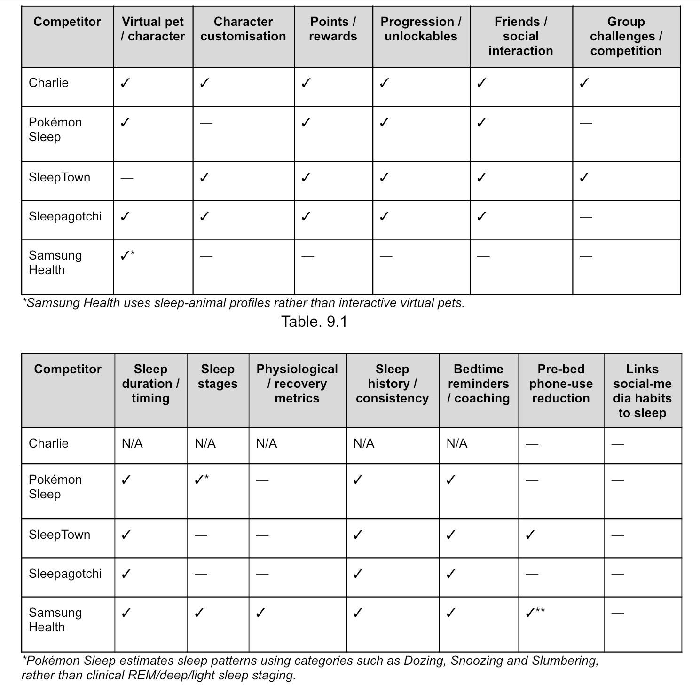
Table 9.2
Our application has taken inspiration from many other pre-existing gamified, and mostly, sleep-related applications. So what makes our application stand apart?
As observed in the table, there are many features that these applications like Pokémon Sleep, SleepTown and Sleepagotchi do not have in common. For instance, while Pokémon Sleep and SleepTown have virtual pet characters, SleepTown does not. Our application, on the other hand, encompasses all the key features that each of these applications have or lack thereof in comparison to others, making it target the problem of sleep and gamification of it in a holistic manner. There is a suite of features that can cater to the needs and wants of different users, which removes the thought of ‘why can’t my application have this?’ entirely. Instead of having to download multiple applications in order to get the same thing, they can have it all-in-one, saving space, time and energy. Moreover, Dozy Town specifically targets the bedtime procrastination and doomscrolling habits that prevent university students from getting sufficient sleep. While these applications offer features such as sleep tracking, gamified rewards or pre-bedtime phone-use reduction, Dozy Town differentiates itself through its Sleep Detective feature, which identifies patterns between users’ evening digital activities and their subsequent sleep outcomes. By helping students recognise how their own scrolling habits may be associated with later bedtimes or daytime tiredness, the application provides personalised insights that go beyond generic sleep scores or reminders.
Beyond that, we target multiple aspects of sleep, in terms of quality, quantity and consistency of sleep, adding to the comprehensive approach of our solution. Its evening wind-down quests encourage students to replace their final scroll with calming activities, while the Dream Library offers short, interactive educational cards that reward users for learning about sleep. Meanwhile, the virtual owl and town-building mechanics make healthy sleep feel rewarding: the town develops overnight, and the owl’s energy and task-completion speed reflect the user’s sleep outcomes. Rather than merely recording sleep or rewarding game participation, Dozy Town connects healthier evening routines with visible in-game progress, helping students perceive sleep as an investment rather than lost time. It can cater to a large target audience of university students who may only have problems with one of the three, but wish to improve their sleep in other aspects as well. Additionally, with our key selling point of this being application for students, by students, if University students use our application out of curiosity and actually find this useful in their lives, which is an added bonus for both us and the users themselves. Our association with the university is something that is unique to us and enables us to tap on a target group more extensive than the other applications ever could.
Finally, Dozy Town is designed around university students’ practical needs through flexible tracking, supportive social features and optional well-being tools. Unlike solutions that depend on compatible wearables for certain measurements, it offers manual check-ins, phone-based options and wearable integration, making participation more accessible. Its Buddy Pledges and collaborative town visits encourage friends to develop consistent sleep routines together, while the optional Garden supports mood reflection without penalising negative emotions. Combined with privacy-conscious data practices, these features position Dozy Town as more than a sleep tracker or entertainment game: it is a student-oriented application designed to address the behaviours underlying poor sleep through personalised feedback, manageable routines and sustained motivation.
9.1 Conclusion
Dozy Town proposes a gamified approach to addressing doomscrolling and irregular sleep habits among university students by making healthy sleep behaviours more engaging and rewarding. Through sleep monitoring, personalised owl avatars, virtual progression systems, and social challenges, the application aims to improve students’ awareness of their sleep patterns and encourage more consistent routines.
The application evaluates three key sleep indicators: consistency, duration, and estimated sleep quality, using them to generate sleep scores and personalised feedback. Gamification features, including in-app currency, avatar customisation, town expansion, and achievement badges, provide incentives for maintaining healthier sleep habits, while the Buddy features encourage peer support as friends are encouraged to wind down consistently together. Collaboration with universities, public health organisations, sponsors, and sleep researchers could further support implementation through funding, educational resources, and scientifically grounded recommendations.
However, Dozy Town’s effectiveness in reducing doomscrolling and improving sleep outcomes remains to be established. Future research should evaluate its usability, long-term engagement, and impact on late-night screen use, sleep duration, and regularity. Scientific validation of the sleep-scoring system, responsible use of wearable-device data, and appropriate privacy safeguards are also essential.
In conclusion, Dozy Town presents a promising concept for combining gamification, behavioural psychology, and digital health promotion to support healthier sleep habits among university students. Its potential impact will depend on evidence-based design, effective stakeholder collaboration, and rigorous empirical evaluation.
9.2 Contribution Log
| Names | Contributions |
|---|---|
| Chong Kar Mun | Gave suggestions on potential topics we can exploreDid thorough research on sleep and stroke rehabilitation when we were deciding between the two Participated actively and joined most, if not all calls for discussionTook inspiration from current solutions and suggested features for the application based on them Contributed to the creation of the survey to collate primary data on University students and their sleep habitsCreated an interactive website with reference to the written report and a clickable prototype of the application for our final submission Created the suggested outline for the report that we are currently followingWorked on solution concept and analysis (Section 6) and Stakeholder & Implementation (Section 7)Summarise research collated in concise notes |
| Diana Tan Gek Kim | Gave suggestions on potential topics we can exploreDid thorough research on sleep and stroke rehabilitation when we were deciding between the two Participated actively and joined most, if not all calls for discussionTook inspiration from current solutions and suggested features for the application based on them Contributed to the creation the survey to collate primary data on University students and their sleep habitsWorked on the introduction and literature review (Section 1 and 2) of the reportSet down meeting dates to ensure adherence to the timeline |
| Emma Lim Xin Rong | Did thorough research on sleep and stroke rehabilitation when we were deciding between the two Took the minutes for our first consultation with Prof Amanda and summarised them for the groupParticipated actively and joined most, if not all calls for discussionTook inspiration from current solutions and suggested features for the application based on them Created the survey to collate primary data on University students and their sleep habitsWorked on stakeholders, discussion, executive summary, conclusion and contribution log (Section 7, 8 and 9) of the reportSet down meeting dates to ensure adherence to the timelineSuggested a brief outline of what the report can include |
| Gunther Lena Sabine Lissy | Took the minutes for our first consultation with Prof Amanda and summarised them for the groupParticipated actively and joined most, if not all calls for discussionTook inspiration from current solutions and suggested features for the application based on them Contributed to the creation the survey to collate primary data on University students and their sleep habitsWorked on the application features and strengths review (Section 6)Created cute and accurate representations of the application features that we want to have in our application |
| Pedapudi Vishnu Raghavi | Gave suggestions on potential topics we can exploreProvided a research paper on stroke rehabilitation for reference Did thorough research on sleep and stroke rehabilitation when we were deciding between the two Was the spokesperson during the consultation with Prof AmandaParticipated actively and joined most, if not all calls for discussionContributed to the creation the survey to collate primary data on University students and their sleep habitsWorked on mythology, survey result analysis and gap evaluation (Section 3, 4 and 5) of the report |
Reference List:
Altena, E., Micoulaud-Franchi, J.-A., Geoffroy, P.-A., Sanz-Arigita, E., Bioulac, S., & Philip, P. (2016). The bidirectional relation between emotional reactivity and sleep: From disruption to recovery. Behavioral Neuroscience, 130(3), 336–350. https://doi.org/10.1037/bne0000128
Catalogue of Bias Collaboration. Spencer EA, Mahtani K. Hawthorne effect. In: Catalogue Of Bias 2017: https://catalogofbias.org/biases/hawthorne-effect/
Chang, A.-M., Aeschbach, D., Duffy, J. F., & Czeisler, C. A. (2015). Evening use of light-emitting eReaders negatively affects sleep, circadian timing, and next-morning alertness. Proceedings of the National Academy of Sciences, 112(4), 1232–1237. https://doi.org/10.1073/pnas.1418490112
Dinis, J., & Bragança, M. (2018). Quality of sleep and depression in college students: A systematic review. Sleep Science, 11(4), 290-301. https://doi.org/10.5935/1984-0063.20180045
How Charlie Works. How it works - Walk with Charlie. (n.d.). https://thecharlieapp.com/how-it-works
Ilhan, Sener and Hacihabiboglu (2022) Improving Sleep-Wake Behaviors Using Mobile App Gamification. Science Direct
https://www.sciencedirect.com/science/article/abs/pii/S1875952121000513
Jiang, L., & Yoo, Y. (2024, June 28). Adolescents’ short-form video addiction and sleep quality: The mediating role of Social Anxiety - BMC Psychology. SpringerLink. https://link.springer.com/article/10.1186/s40359-024-01865-9
Kryger, M., Roth, T., & Dement, W. C. (Eds.). (2017). Principles and practice of sleep medicine (6th ed.). Elsevier.
Lo, J. C.-Y. (2026, October). Sleep - its importance across the lifespan. MIH1101 Lecture 8 - Sleep Health. Singapore; Singapore.
Mitchner (2022) Top 6 Tips For Your First Study with Wearables
https://www.labfront.com/article/researchers-wearables-tips
Parella (2024) What is “Gamifying Your Sleep” and Is It Beneficial? Mori Medical Equipment
https://morimedicalequipment.com/what-is-gamifying-your-sleep-and-is-it-beneficial/
Pokémon Sleep. (n.d.). Sleep tracking. https://www.pokemonsleep.net/en/sleep/
Samsung. (2024, August 9). Use Samsung Health sleep monitoring on your Samsung Galaxy Watch and Fit. Samsung Singapore. https://www.samsung.com/sg/support/mobile-devices/use-samsung-health-sleep-monitoring-on-your-samsung-galaxy-watch-and-fit/
Sleepagotchi. (n.d.). Sleepagotchi loyalty program. https://hub.sleepagotchi.com/loyalty
Spytska, L. (2024, September 27). The importance of quality sleep and its relationship with physical and Mental Health: A Systematic Review. Sleep Medicine Research. https://sleepmedres.org/journal/view.php?number=288
StatPearls. (n.d.). Physiology, sleep stages. StatPearls Publishing. https://www.statpearls.com/point-of-care/29141
Sullivan, E., McCall, C. A., Henderson, L.-M., & [fourth author]. (2025). Disentangling sleep’s role in emotion processing. Neuropsychologia, 109269. https://eprints.whiterose.ac.uk/id/eprint/231275